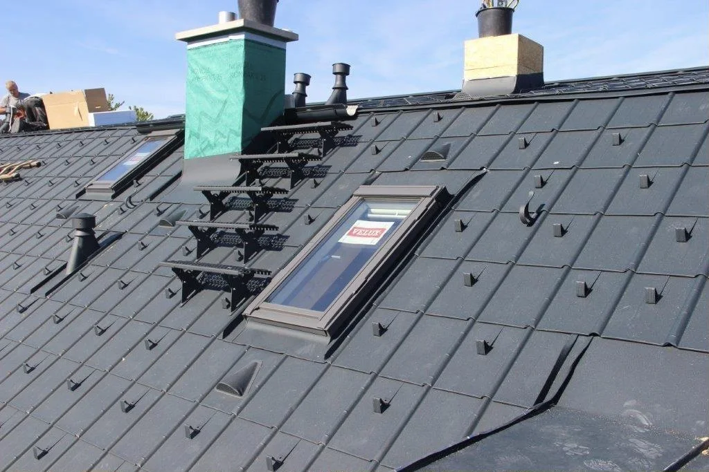
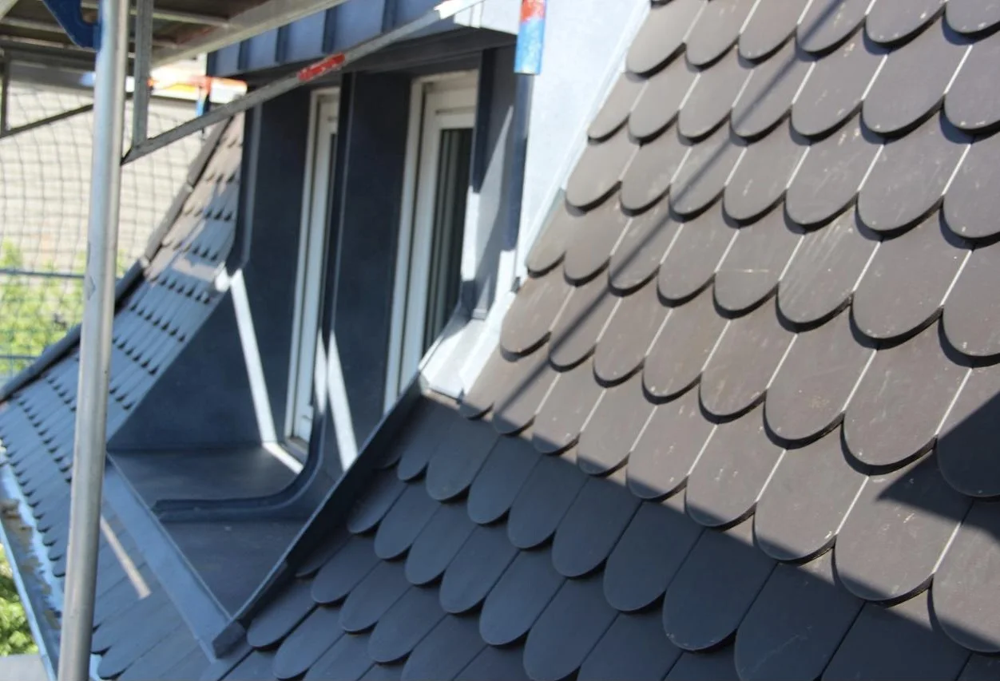
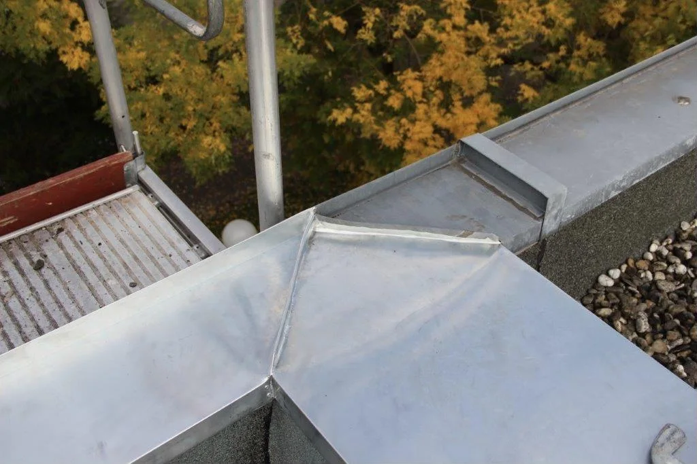
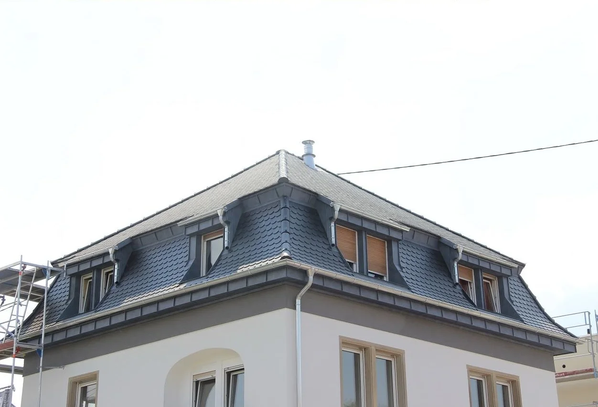
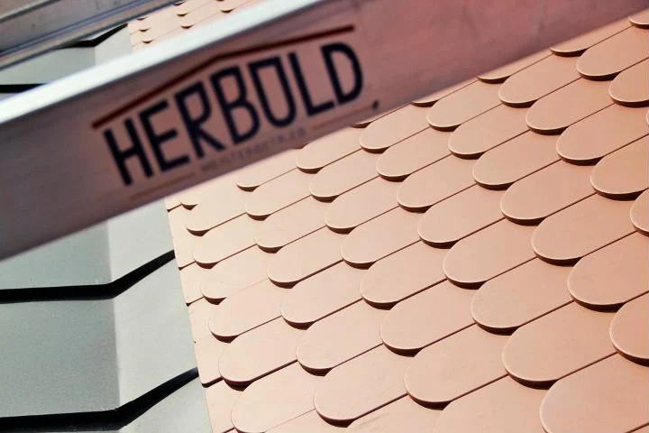
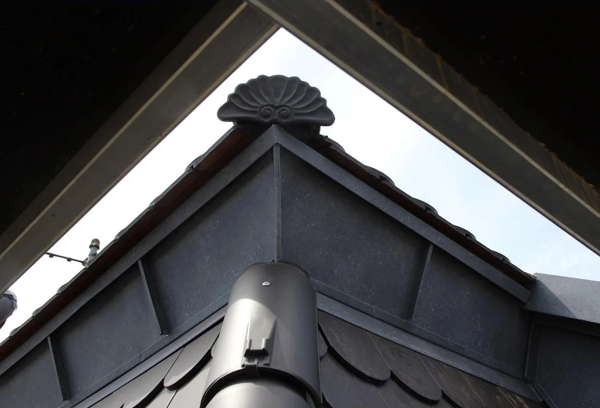
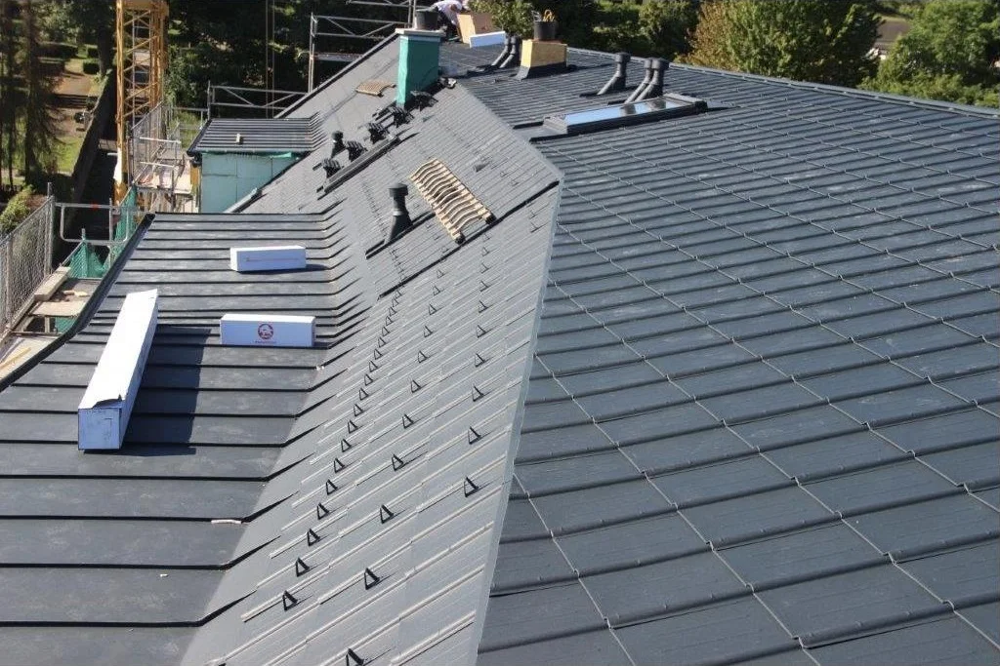
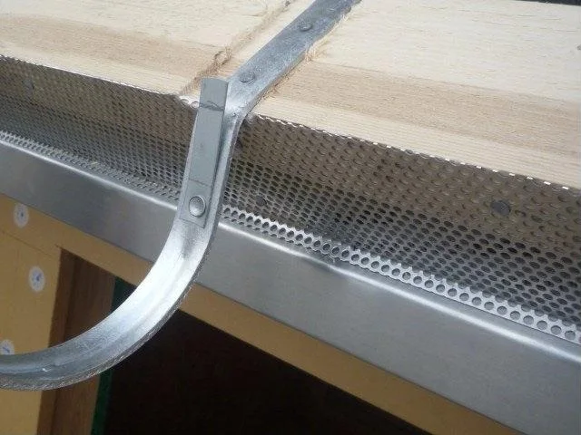
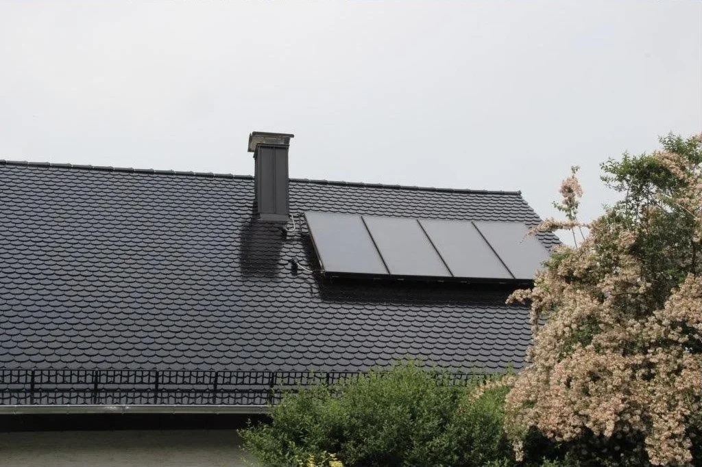
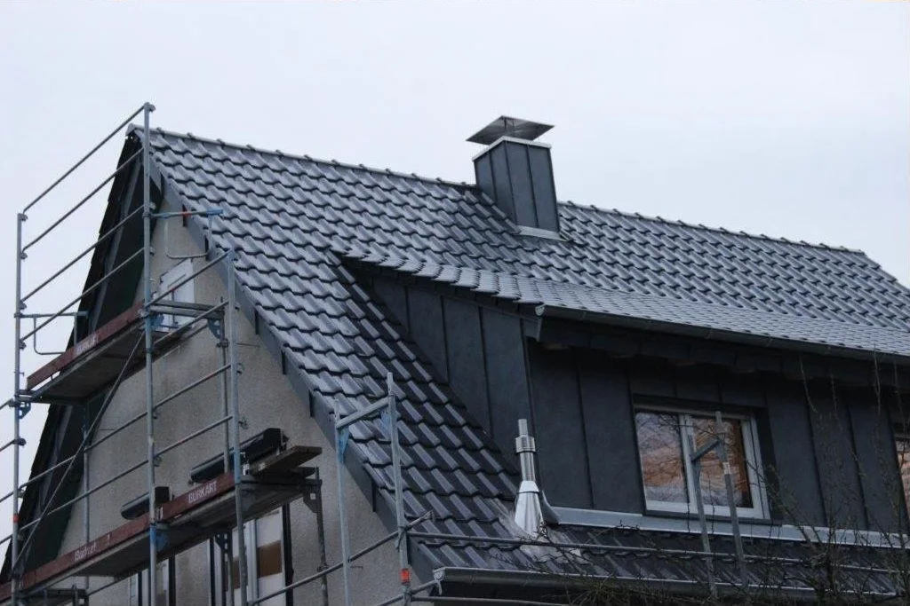

Dachdecker und Blechner in Ötigheim Ob Blech, ob Dach. Meisterhaft vom Fach.
Steildach, Flachdach, Gründach und alles aus Blech, von der Analyse über die Beratung bis zur fachgerechten Ausführung. Für Rastatt, Ettlingen und Karlsruhe.
Leistungen

Dachdeckerei
- Flachdach mit Kunststoff- oder Bitumenbahnen
- Ziegel, Betondachstein, Metall und Trapezblech
- Wärmedämmung und Dachbegrünung
- Terrassen- und Balkonabdichtung
- Dach- und Wohnraumfenster, Gaubenbau
- Gerüstbau

Klempnerei
- Dachrinnen und Entwässerungssysteme
- Stehfalz- und Metallfalzdächer
- Mauerabdeckungen in Zink, Kupfer, Aluminium
- Kamin- und Gaubenverkleidungen
- Bleiarbeiten
Arbeiten
Handwerk, das man von unten sieht.







Der Betrieb
Traditionelles Handwerk, moderne Technik.
2007 legte Marcus Herbold die Meisterprüfung im Dachdeckerhandwerk ab, im Mai 2010 gründete er Herbold-Dach. Gearbeitet wird ausschließlich nach den Fachregeln und der DIN für Dachdecker und Klempner.
Als eingetragener Meisterbetrieb der Handwerkskammer Karlsruhe bilden wir selbst aus. Und weil ein zufriedener Kunde die beste Werbung ist, sind wir auch nach der Bauphase für Sie da.
Wir arbeiten mit Braas · Prefa · Velux · Würth · Icopal · Kemper System
Karriere
Handwerker. Weil Superheld kein anerkannter Beruf ist.
- Ausbildung zum Dachdecker
- Praktikum
- Dachdeckergesellen und Helfer
Du willst hoch hinaus, arbeitest gerne im Team an der frischen Luft und steigst anderen gerne aufs Dach? Ruf einfach an oder schick uns deine Bewerbung.
- Mobil
- 0171 784 43 56
- info@herbold-dach.de
- Betrieb
- Industriestraße 27
76470 Ötigheim - Einsatzgebiet
- Rastatt, Ettlingen, Karlsruhe und Umgebung